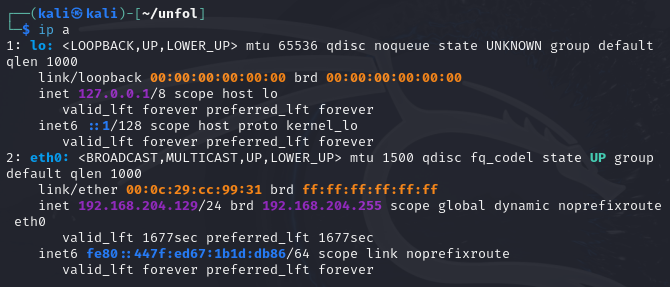
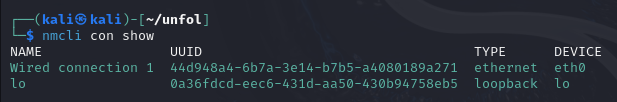
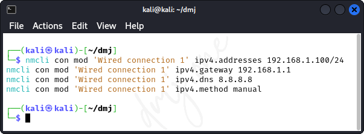
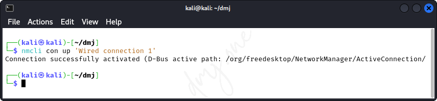
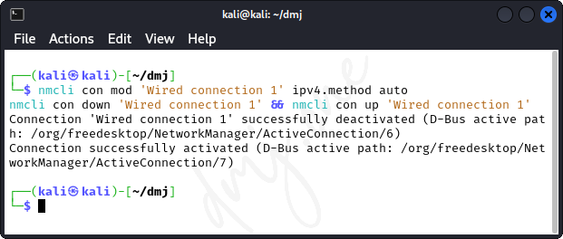
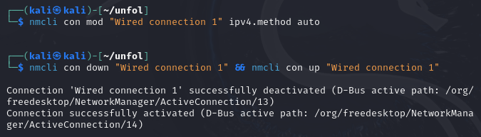

Practical 7: Perform an operation of operating system to configure Internet Protocol.
Mohan, D. (2024, April 22).
Perform an operation of operating system to configure Internet Protocol.
Practical 7: Perform an operation of operating system to configure Internet Protocol - CSU360 - Shoolini University.
Retrieved from https://dmj.one/edu/su/course/csu360/lab/configure-internet-protocol
Configuring Internet Protocol on Kali Linux
In this practical, we will demonstrate how to configure the Internet Protocol (IP) settings on Kali Linux. The process involves setting up a static IP address, subnet mask, and default gateway to establish a stable and predictable network environment. This is crucial for network management, troubleshooting, and ensuring consistent network performance.
7.1 Understanding IP Configuration
Internet Protocol (IP) configuration involves setting up IP addresses, subnet masks, default gateways, and DNS servers. IP addresses identify each device on a network, subnet masks define network boundaries, and default gateways enable devices to communicate with external networks.
7.2 Checking Current IP Configuration
Before configuring a new IP address, it's important to check the current settings. This can be done using the ip command.
ip a
This command displays all current network interfaces and their IP configuration.

Figure: ip a command
7.3 Setting Up a Static IP Address
To configure a static IP address, you need to edit the network configuration file. In Kali Linux, this is typically handled by the NetworkManager.
First, identify the connection name using:
nmcli con show

Figure: Show Connections
Then, modify the connection settings for your specific network interface (replace "eth0" with your interface name and adjust the IP details accordingly):
nmcli con mod eth0 ipv4.addresses 192.168.1.100/24
nmcli con mod eth0 ipv4.gateway 192.168.1.1
nmcli con mod eth0 ipv4.dns 8.8.8.8
nmcli con mod eth0 ipv4.method manual
After configuring the settings, reactivate the connection:
nmcli con up eth0
7.4 Verifying the Configuration
After setting up the static IP, verify that the configuration is correct and the network is operational:
ip a
Check if the IP address, subnet mask, and default gateway are correctly assigned as per your configuration. Additionally, test network connectivity:
ping -c 4 google.com
This command tests connectivity to the internet by sending packets to Google's servers.
7.5 Setting Up a New IP Address in a Different Class
Assuming the current IP address is in Class C (e.g., 192.168.1.100), we will change it to a Class A address (e.g., 10.0.0.100) but with the same subnet mask of 255.255.255.0.
First, ensure the Network Manager service is active:
systemctl status NetworkManager
If the service is not running, start it using:
systemctl start NetworkManager
Then, get the current ip address to verify the IP class change:
ifconfig

Figure: Get current IP Address
Then, modify the IP configuration:
nmcli con mod "Wired connection 1" ipv4.addresses 10.0.0.100/24 # Apply Changes
nmcli con down "Wired connection 1" && nmcli con up "Wired connection 1" # Restart Adapter

Figure: Change the IP Address Class
This command changes the IP address and reactivates the network connection to apply changes.
Then, Verify the IP class change:
ifconfig

Figure: Get new class IP Address
Optionally, to revert back to automatic settings, run these:
nmcli con mod "Wired connection 1" ipv4.method auto # Revert Changes and set to auto
nmcli con down "Wired connection 1" && nmcli con up "Wired connection 1" # Restart Adapter

Figure: Get new class IP Address
7.6 Verifying New Configuration
After updating the IP address, verify that the new configuration is applied correctly:
ip a
Look for the interface "eth0" to see if the IP "10.0.0.100" with the subnet "255.255.255.0" is correctly assigned. Also, ensure the network connectivity is intact:
ping -c 4 google.com
This command checks the reachability of Google's servers, confirming that the network interface is functioning properly with the new IP class.
7.7 Changing IP Address Using ifconfig
Alternatively, to change the IP address using the older ifconfig command, you would first need to determine your network interface name and then use the following commands to update the IP settings:
sudo ifconfig eth0 10.0.0.101 netmask 255.255.255.0
This command sets a new IP address while maintaining the same subnet mask on the specified interface. Verify the update by using:
ifconfig eth0
Ensure that the IP address has been changed as expected and test connectivity:
ping -c 4 google.com
This will confirm the network's functionality with the newly assigned IP address.